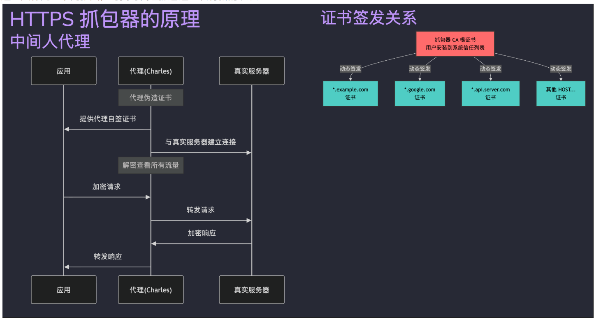
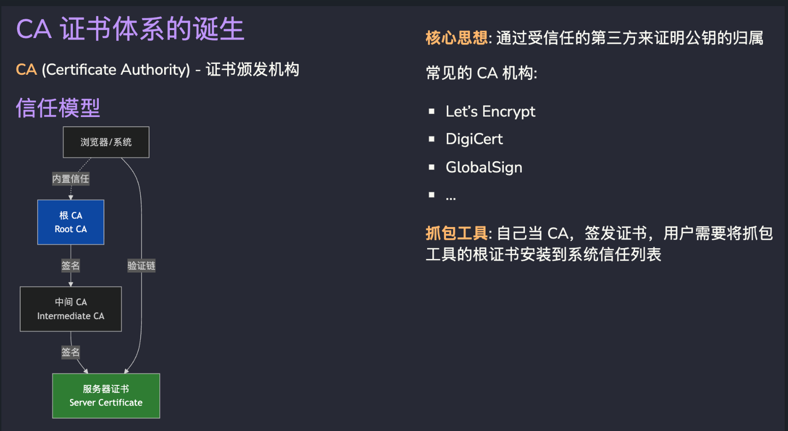
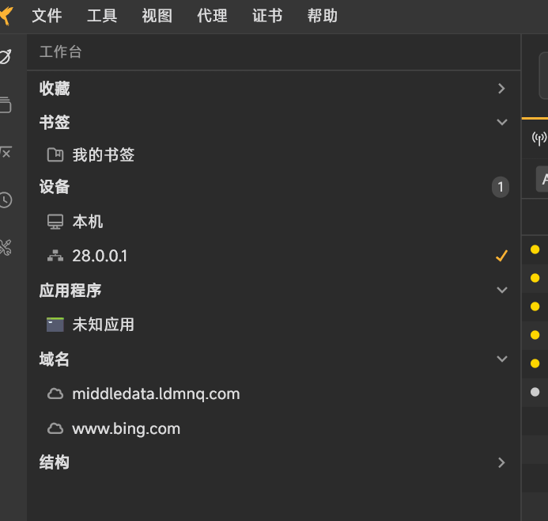
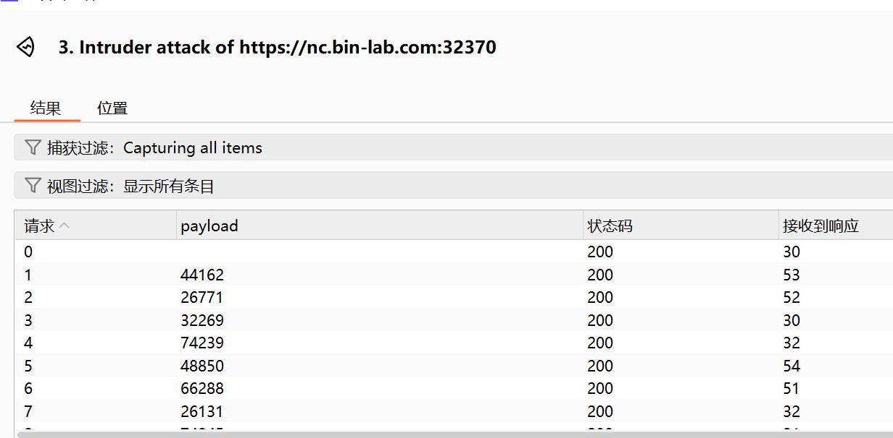
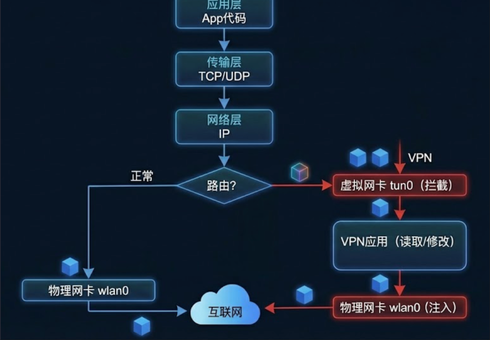
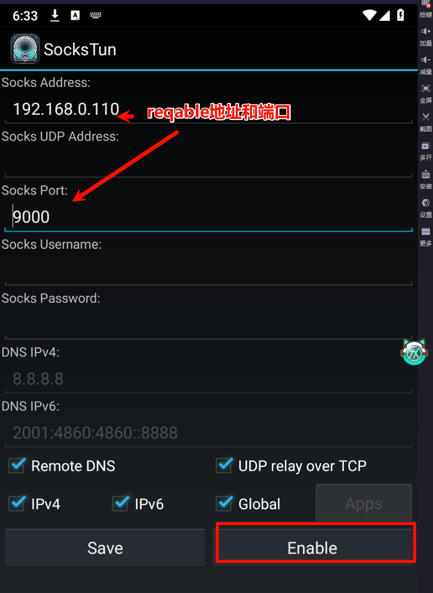
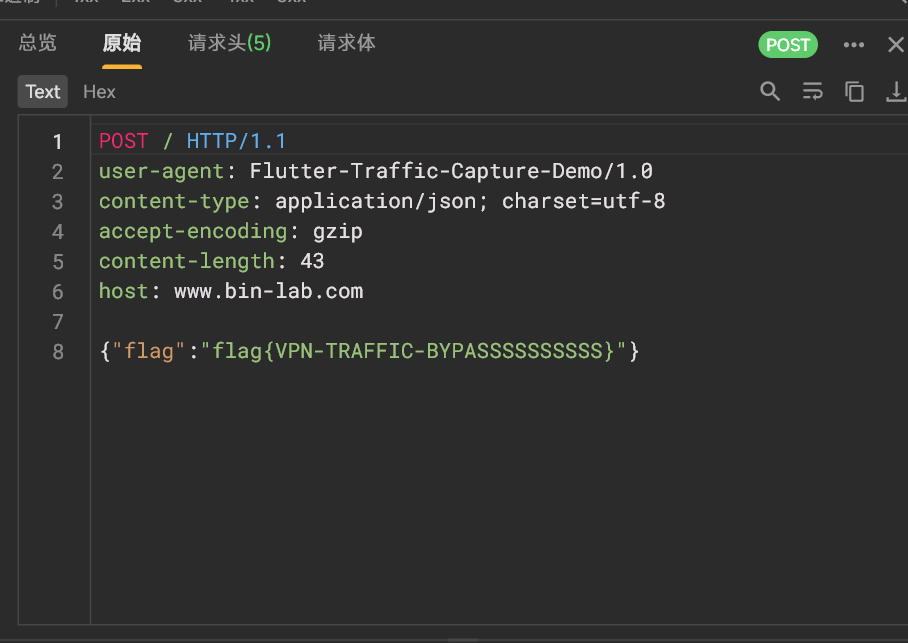
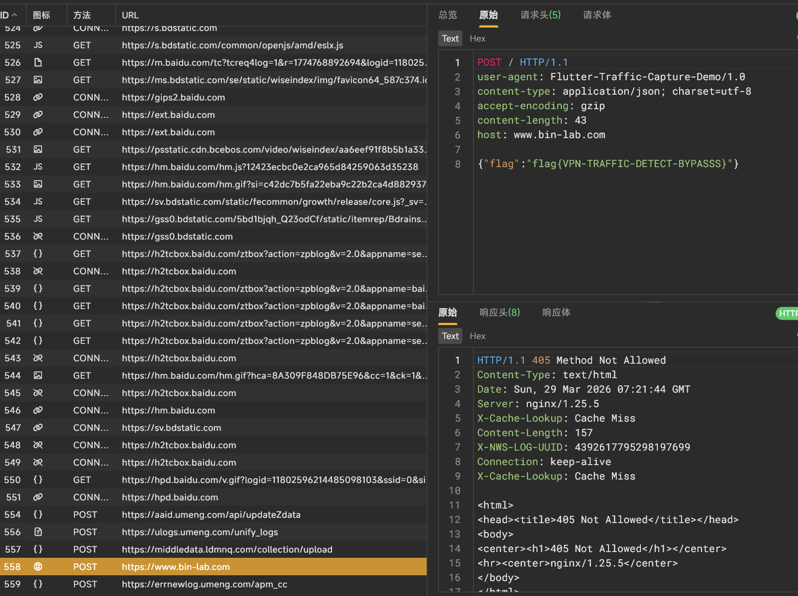

这是OnePanda战队的程序元师傅发给我的一套靶场，实操下来感觉很有趣，因此在这里复现一手
靶场连接：BinLab - 二进制磨剑实验平台
实验 0: 现代流量安全的基石——证书实验 前置知识 1 2 3 4 5 6 7 8 9 10 11 12 13 1. 证书层级结构 根 CA (Root CA) ├── 中间 CA (Intermediate CA) [可选] └── 服务器证书 (Server Certificate) 根 CA：自签名，被操作系统/浏览器信任 服务器证书：由 CA 签发，用于标识网站身份 2. X.509 证书关键字段 Subject (主题)：证书所有者信息 Issuer (颁发者)：签发此证书的 CA Validity (有效期)：Not Before 和 Not After Subject Alternative Name (SAN)：支持的域名列表 Basic Constraints：CA:TRUE 表示这是 CA 证书 Key Usage：证书可用于哪些操作
首先介绍了证书的基本结构
一般操作证书我们使用openssl工具。linux直接用apt安装就好了
现在看他要求我们干什么，让我们生成并签发证书
现在首先生成一个证书
步骤 1：生成 Root CA
生成 CA 私钥（建议 2048 或 4096 位）
使用私钥生成自签名证书
设置合适的有效期
确保包含 CA:TRUE 扩展属性
输入命令:openssl genrsa -out test.pem 2048
生成一个pem证书，里面的内容是一个私钥。
然后开始生成证书签名请求，就如同写一个签名申请表一样
openssl req -key test.pem -out test.csr
发送完成，但其实我们还得拿着csr去找CA
我们直接自己给自己签发一张：openssl req -x509 -key test.pem -out cert.pem -days 365
会让我们填写各种信息，不必理会填写即可：
1 2 3 4 5 6 7 8 9 10 11 12 13 14 15 ➜ 新建文件夹 (2 ) openssl req -x509 -key test.pem -out test.pem -days 365 You are about to be asked to enter information that will be incorporated into your certificate request. What you are about to enter is what is called a Distinguished Name or a DN. There are quite a few fields but you can leave some blank For some fields there will be a default value,If you enter '.', the field will be left blank.----- Country Name (2 letter code) [AU]:CN State or Province Name (full name) [Some-State]:WLMT Locality Name (eg, city) []:city Organization Name (eg, company) [Internet Widgits Pty Ltd]:wlmt Organizational Unit Name (eg, section) []:wlmt Common Name (e.g. server FQDN or YOUR name) []:wlmt Email Address []:3061049419 @qq.com
然后我们可使用这个作为CA根证书去签发其他的证书：
1 2 3 4 5 6 7 8 openssl x509 -req -in <csrfile> -CA <ca_cert> -CAkey <ca_key> \ -out <certfile> -days <days> -CAcreateserial openssl x509 -in <certfile> -text -noout openssl verify -CAfile <ca_cert> <certfile>
当然我们可使用扩展属性：
1 2 3 4 5 6 7 8 9 10 11 12 13 14 15 16 17 18 19 20 21 22 23 24 [req] default_bits = 2048 prompt = no default_md = sha256 distinguished_name = dn req_extensions = v3_req [dn] C=CN ST=Beijing L=Beijing O=MyOrganization CN=example.local [v3_req] subjectAltName = @alt_names keyUsage = digitalSignature, keyEncipherment extendedKeyUsage = serverAuth [alt_names] DNS.1 = example.local DNS.2 = www.example.local # DNS.3 = *.example.local # 通配符域名 # IP.1 = 192.168.1.100 # IP 地址
如何应用这个扩展属性？
1 2 3 4 5 6 7 8 9 10 11 12 13 14 15 16 17 关键参数： req_extensions = v3_req: 指定在 CSR 中包含扩展 subjectAltName = @alt_names: 引用 alt_names 段中的域名列表 keyUsage: 密钥用途（digitalSignature, keyEncipherment） extendedKeyUsage: serverAuth 表示用于服务器认证 使用配置文件： # 生成 CSR 时使用配置文件 openssl req -new -key server.key -out server.csr -config san.cnf 签发证书时应用扩展： openssl x509 -req -in server.csr \ -CA ca.crt -CAkey ca.key -CAcreateserial \ -out server.crt -days 365 -sha256 \ -extfile san.cnf -extensions v3_req 注意：-extfile 和 -extensions 参数是应用 SAN 扩展的关键。
实战 1：自签名证书与中间人攻击 这个环境的做题也很简单：
生成根 CA（自签名）
准备 SAN 配置文件
为 3 个域名分别生成：私钥 → CSR → 用 CA 签发证书 （根证书、各个被CA签发的证书都拥有一个自己的key）
exp：
1 2 3 4 5 6 7 # 生成 CA 私钥 openssl genrsa -out myCA.key 2048 # 生成自签名 CA 证书（10 年，CA:true） openssl req -x509 -new -nodes -key myCA.key -sha256 -days 3650 -out myCA.crt \ -addext "basicConstraints=CA:true" \ -addext "keyUsage=digitalSignature,keyCertSign"
然后配置san.conf：
1 2 3 4 5 6 7 8 9 10 11 12 13 14 15 16 [req] distinguished_name = req_distinguished_name req_extensions = v3_req prompt = no [req_distinguished_name] CN = placeholder [v3_req] basicConstraints = CA:FALSE keyUsage = nonRepudiation, digitalSignature, keyEncipherment extendedKeyUsage = serverAuth subjectAltName = @alt_names [alt_names]
签发CCC：（其他同理）
1 2 3 4 5 6 7 8 9 10 11 12 13 14 15 # 生成 ccc 私钥 openssl genrsa -out c.key 2048 # 生成 CSR openssl req -new -key c.key -out c.csr -subj "/CN=ccc.local" # 用 CA 签发证书（带 SAN，不报错版） openssl x509 -req -in c.csr -CA myCA.crt -CAkey myCA.key -CAcreateserial \ -out c.crt -days 365 -sha256 \ -extfile <(cat <<EOF [v3_req] subjectAltName = DNS:ccc.local EOF ) \ -extensions v3_req
这就通过了验证
实战 2：Android 系统证书提取 知识点 1. Android 证书存储位置 Android 系统将信任的 CA 证书存储在：
1 /system/etc/security/cacerts/
每个证书文件的命名格式：<hash>.0
其中 hash 是证书 Subject 的哈希值。
2. 证书文件格式
PEM 格式 ：Base64 编码，以 -----BEGIN CERTIFICATE----- 开头DER 格式 ：二进制格式Android 系统证书通常使用 PEM 格式，但包含证书文本信息
3. 证书哈希计算 OpenSSL 使用特定算法计算证书的 subject hash：
1 openssl x509 -subject_hash_old -noout -in <certfile>
这个命令输入进去就好了
实验 1: App MITM 基础抓包与请求构造实验 这里只补充一下两张图，对我对代理抓包这一块有新的认识：


这个题要求我们能掌握安卓抓包
可以在安卓机上的wifi处增加代理，走burp通道
也可以用小黄鸟抓包。这里用后者，配置过程略
扫码添加设备之后，理论上这里已经可以看到自己的手机/模拟器：

这里选择联动BP（开启reqable的二级代理即可）

实验 2: VPN、Socks5 与网关抓包 VPN大概就是搭建了一个看似是直接到VPN服务器的“隧道” 流量在隧道里面是加密的

安装这个app：Release 7.0 · heiher/sockstun ，可以让app的传输层协议走VPN，这样就能抓到它的包了
AI解释：你自己开了一个独立 VPN，要抓这个 VPN 隧道里的包 ，这时才需要 SOCKS5 + SocksTun 把流量导进 Reqable。
电脑上也有类似的叫做proxifier，但是原理不同，解决目的都是一样的。

不过还是想吐槽下这个UA设计，竟然是安卓4风格

然后题目新增一个VPN检测，这就以为能难住我了？
进入这个仓库下载VPN过检测模块，就检测不到VPN了：https://github.com/grbnb/xp_module

成功拿到flag
实验 3: eBPF 抓包与 Wireshark 分析实验 这里介绍了新的一种工具和思路吧
1 2 3 4 5 6 7 8 9 10 11 12 13 14 15 16 17 eBPF（extended Berkeley Packet Filter） 是运行在 Linux 内核中的一种“安全沙箱程序”，可以在不修改内核源码、不重启系统的前提下，动态挂载到内核或用户态函数上，进行观测与分析。 在抓包场景中，常用方式是通过 eBPF 挂载到 SSL/TLS 库的加密函数 上，在加密前/解密后直接获取明文数据，这类方式通常被称为 eBPF TLS 抓包。 核心特点 内核级观测：不改 App、不装自签 CA 证书，也无需中间人代理 抓取明文：可在 SSL_read() / SSL_write() 处获得加解密前后的应用层明文 性能影响小：BPF 程序在内核中执行，开销可控，适合长时间运行 透明性好：对业务代码零侵入，适合黑盒应用流量分析与安全审计。 在本课程中我们使用的 eCapture 工具，正是基于 eBPF，通过在用户态库（如 OpenSSL/BoringSSL）上挂载 uprobe，实现对 TLS 明文数据的捕获。 例如： SSL_read() → 捕获服务器发送给客户端的明文数据 SSL_write() → 捕获客户端发送给服务器的明文数据
eCapture就是利用这个原理进行的抓包，我们简单配置一下:利用adb推送eCapture到/data/local/tmp目录
先启动eCapture，这里使用针对包名抓包的方式进行：
实验4：略 因为这个是全程使用AI进行的，因此就略过了